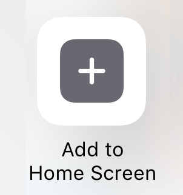
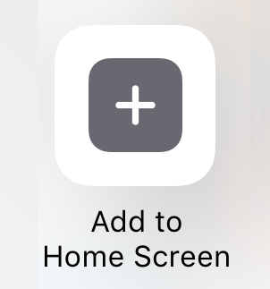
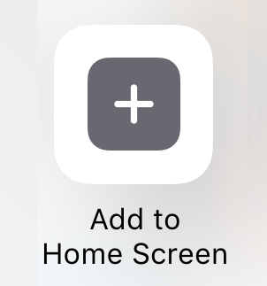
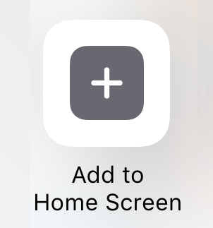
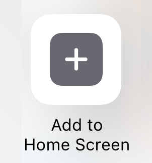

Votre navigateur ne prend pas en charge les vidéos HTML5. Voici un lien pour télécharger la vidéo.
Install this web-app on your iPhone: tap then select 
 then select  then select 
then select  then select 